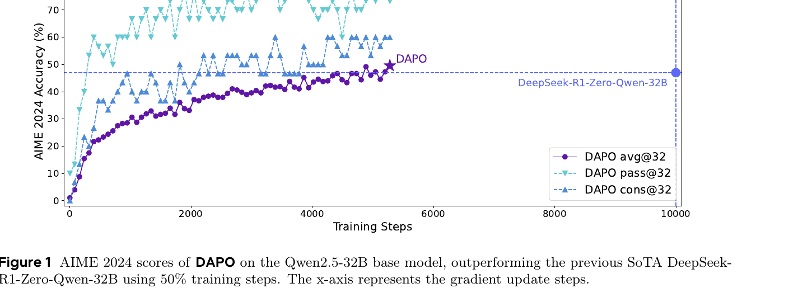
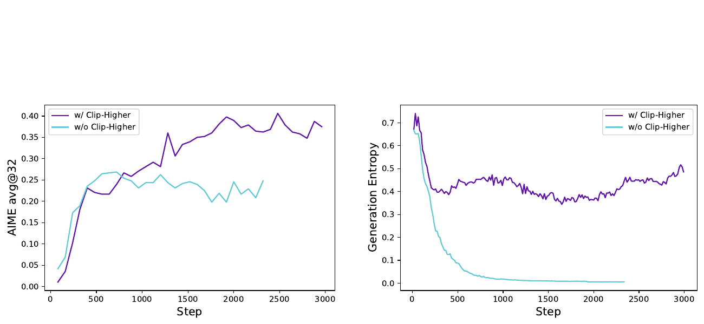
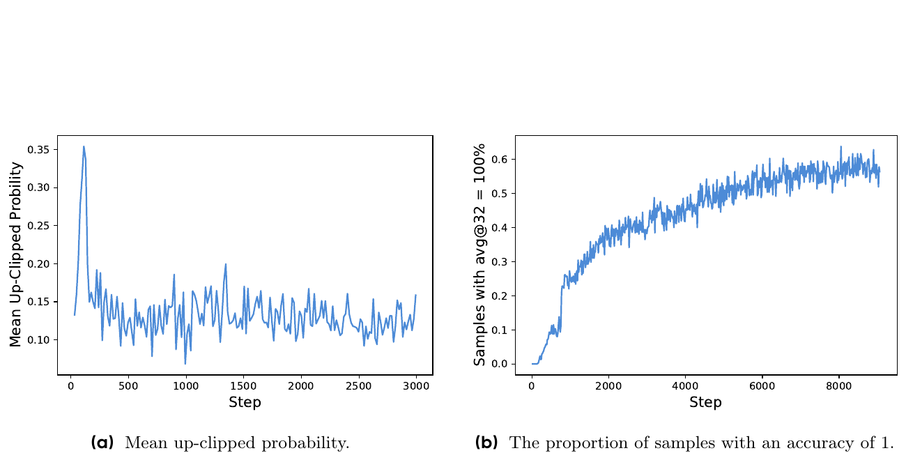
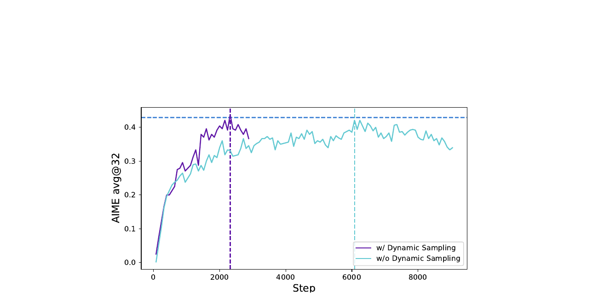
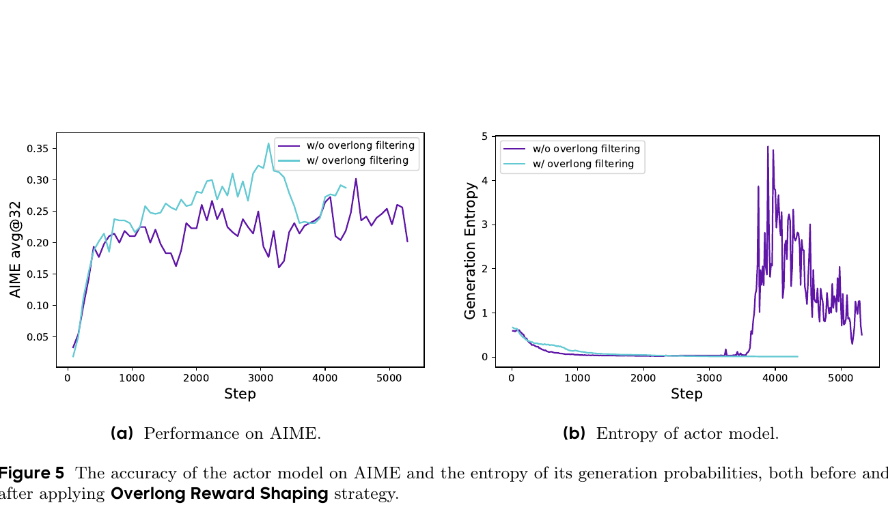
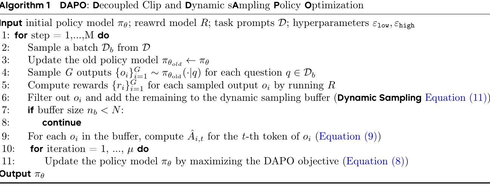
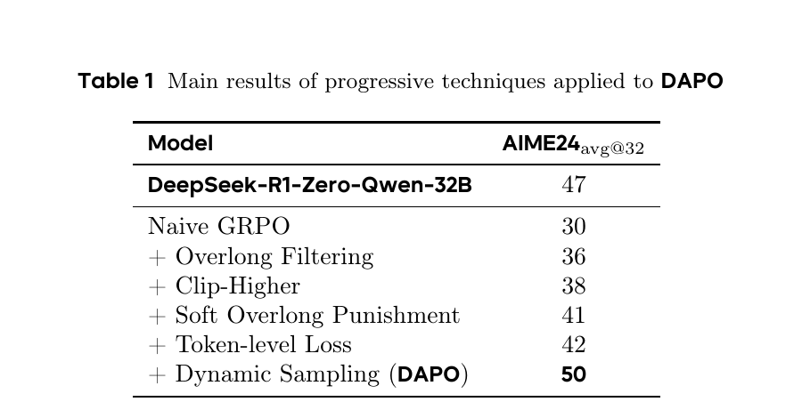
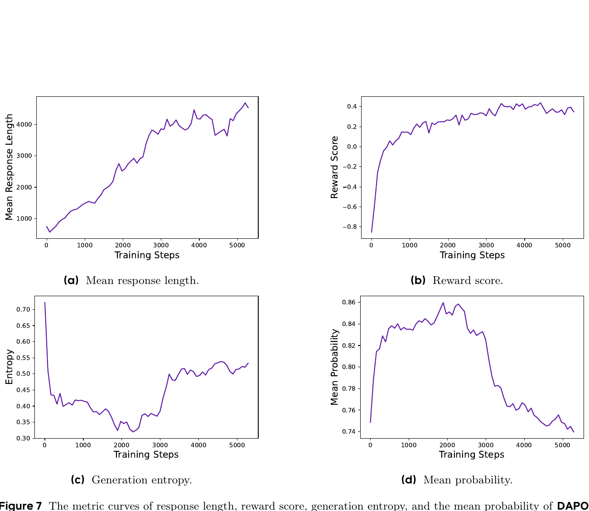

DAPO: An Open-Source LLM Reinforcement Learning System at Scale
1. 出发点 (Motivation)
2025 年初 OpenAI o1 + DeepSeek R1 把"long-CoT RL"推上了 LLM 范式革命的中心 — 但实际算法和训练 recipe 几乎全是黑盒。R1 技术报告只给了 framework 级别的描述,社区想复现 Qwen2.5-32B 上的 47% AIME24 时全都卡住,普遍只能拿到 30 分左右。DAPO 作者团队 (字节 + 清华 AIR) 的诊断:
- naive GRPO baseline 有几个具体的故障模式 — 不是"算法不行",是 4 个不起眼但 load-bearing 的工程问题没解决:
- entropy collapse: 训几百步后 policy entropy 急剧下降,sampled responses 几乎一样 — 没探索就没法 scale。
- gradient 死亡: 当一个 prompt 的 \(G\) 个 outputs 全对 (acc=1) 或全错 (acc=0),GRPO advantage 是 0,这组 prompt 的 gradient 也是 0。训练越久全对的 prompt 越多,有效 batch 越小。
- 长序列贡献被稀释: GRPO 默认 sample-level loss aggregation (先对每个 sample 内 token 取平均,再 sample 之间平均)。结果:长 CoT (几千 token) 的每个 token 贡献 = 短 CoT 每个 token 贡献 / 长度比。长序列里 gibberish/repetition 的负 reward 信号几乎消失 → 模型刹不住车。
- truncation reward noise: 超长样本默认给一个固定 negative reward。但一个 reasoning 过程本来对但写得长就被惩罚,reward 信号污染整个训练。
- 关闭整个 recipe 是知识封锁。 学界根本无法验证 "R1 算法是不是真的好"。DAPO 把所有 4 个修复 + 代码 + 数据 + 权重 全部公开,作为反封锁的样本。
论文的 4 个 named 技术合起来叫 DAPO (Decoupled clip + Dynamic sAmpling Policy Optimization)。Qwen2.5-32B base → 50% AIME24,只用 R1-Zero 50% 的 step:

2. 方法 (Method)
核心思想 (类比)
把 long-CoT RL 训练想成"教学生做一道很长的证明题":
- Clip-Higher = 老师之前对每个学生的进步幅度都设了同样的上下限 (±20%)。问题:好学生本来就接近满分,稍微再涨一点不难;差学生想从 1 分涨到 10 分却被限死。DAPO 解法:把上限放宽 (+28%) 让低概率"探索性"动作更容易被提升,下限保持 -20%。
- Dynamic Sampling = 老师批作业。如果一组 16 个学生全做对或全做错,这组作业不能教你"哪种解法好"(没对比信号)。DAPO 解法:把这种死组扔掉,继续抽到攒够 batch 为止。
- Token-Level Loss = 老师本来按"每个学生权重相等"打分。问题:学生 A 写 100 词、学生 B 写 5000 词,B 里的每个词只占 A 的 1/50 的影响 — 这意味着 B 写的 gibberish 里掺了一句很关键的洞见会被"平均"掉,B 写的 repetitive 废话也不会被惩罚。DAPO 解法:全 batch 所有 token 一视同仁取平均 — 长 sequence 自然在 loss 里贡献更多。
- Overlong Reward Shaping = "超过字数就 0 分"的惩罚太粗暴。DAPO 解法:超过 max-buffer 才完全 -1,在 buffer 区间内线性降 — 给模型一个明确的"长度梯度"。
这 4 个修复没一个是惊天动地的算法 — 都是"现有方法里某个不显眼的角落里有 bug"。但合在一起,30 → 50 分。
2.1 GRPO 起点 + 公式
DAPO 基于 GRPO (Shao et al. 2024)。GRPO vs PPO 的核心区别:不用 value 网络,直接 group-wise 标准化做 advantage。对一个 prompt \(q\) 采样 \(G\) 个回复,advantage 是:
注意所有 token 共享同一个 sequence-level advantage \(\hat A_i\)。GRPO 的 clipped surrogate (PPO style):
其中 \(r_{i,t}(\theta) = \pi_\theta(o_{i,t}|q, o_{i,\lt t}) / \pi_{\theta_{\text{old}}}(o_{i,t}|q, o_{i,\lt t})\)。
关键观察: GRPO 的内层 \(\frac{1}{|o_i|}\sum_t\) 是sample-level token-mean,外层 \(\frac{1}{G}\sum_i\) 是 sample 上平均。这两层平均的组合,就是 Token-Level Loss 要修的东西 — 见 §2.4。
额外:DAPO 去掉了 KL 项 (\(\beta = 0\))。逻辑:RLHF 里要约束 model 不偏离原模型 (因为想保留通用对齐);但 long-CoT reasoning 训练里 policy必然大幅偏离 base (要学新的"思考"模式),KL 约束反而阻碍。
额外:rule-based reward 而不是 reward model。\(R(\hat y, y) = 1\) if answer 正确 else \(-1\)。避免 reward hacking。
2.2 Clip-Higher (raise the upper bound)

问题: PPO/GRPO 默认 \(\varepsilon = 0.2\),新概率被 clip 到 \([\pi_{\text{old}} \cdot 0.8,\ \pi_{\text{old}} \cdot 1.2]\)。这个 clip 对"高概率 exploitation token"和"低概率 exploration token"的影响不对称:
- \(\pi_{\text{old}} = 0.9\) 的 exploitation token → 上限 \(0.9 \times 1.2 = 1.08\) (实际 cap 在 1),空间大。
- \(\pi_{\text{old}} = 0.01\) 的 exploration token → 上限 \(0.01 \times 1.2 = 0.012\),几乎不能涨。
结果:exploitation token 持续被强化,exploration token 永远涨不起来 → entropy 崩溃。Fig 3a 实测:被上界 clip 的 token 平均概率 \(\lt 0.2\) — 印证了"上界主要在卡低概率 token"。

**DAPO 修复:**分离上下 clip 边界
实验设 \(\varepsilon_{\text{low}} = 0.2\) (维持原值,防止低概率 token 被压到 0)、\(\varepsilon_{\text{high}} = 0.28\)。这一个超参的微调就让 entropy 不再 collapse。
2.3 Dynamic Sampling (filter dead groups)
问题 (Fig 3b): 训练后期,acc=1 的 prompt 占比从 0 涨到 ~0.6。这些 prompt 的整个 group reward 都是 1,group-std = 0,advantage = 0,贡献 0 gradient。有效 batch 在悄悄变小。
DAPO 修复: 在 batch 级别过采样,过滤掉 group 内 reward 全 0 或全 1 的 prompt,直到攒够目标 batch size。形式化加在 DAPO 目标里:
(每个 prompt 的 \(G\) 个 output 里必须至少有 1 个对、至少有 1 个错。)
实现层面 — verl 的 filter_groups.enable=True:用 gen_batch_size(例:1536) 采样,过滤 → 目标 train_batch_size(例:512)。如果一次过滤后<不够,继续采,最多 max_num_gen_batches 次。

2.4 Token-Level Policy Gradient Loss (long-CoT 关键)
问题: GRPO 的 loss aggregation 是 sample-level:
意味着 每个 sample 贡献相同的 loss 权重,不管它是 100 token 还是 5000 token。在 long-CoT 场景,这有两个问题:
- 高质量长样本 里某个关键 reasoning step 的 reward 信号被 \(1/|o_i|\) 严重稀释 — 模型学不到 "这一步的思考方式对了"。
- 劣质长样本(gibberish, repetition) 里每个差 token 也被 \(1/|o_i|\) 稀释 — 模型刹不住"越写越长越烂"的循环。
**DAPO 修复:**改成 token-level mean — 所有 batch 里的 token 一视同仁:
长 sample 自动在 loss 里占更大权重(它有更多 token 贡献)。
没有这个修复(Fig 4 in paper):entropy 在长序列出现后失控,response length 也持续上涨到不健康水平。这是 long-CoT 跟 short-CoT(RLHF instruction-following)的本质区别 — 长度差异从"几十倍"变成"几百倍",sample-level mean 直接失效。
2.5 Overlong Reward Shaping (truncation noise)
问题: 训练设 max length(如 20480 token)。超出的样本默认直接给 -1 reward。但很多被截断的样本推理本身是对的,只是写得长 — 一个 sound reasoning 因为长度被打 -1,模型学到的是"长 = 错",这是 reward noise。
**DAPO 解法 1 — Overlong Filtering:**直接 mask 掉被截断样本的 loss(让它不贡献 gradient)。简单粗暴但有效。Fig 5 显示这就能稳住 entropy。

**DAPO 解法 2 — Soft Overlong Punishment (Eq 13):**不是 0/1 切断,而是 length-aware 软惩罚。设 \(L_{\max}\) = max 输出长度(20480),\(L_{\text{cache}}\) = buffer 长度(4096):
所以:
- 0 - 16384 token:零惩罚 (写多长都行)
- 16384 - 20480 token:线性 0 → -1 惩罚 (鼓励刹车)
-
20480 token:full -1 (硬截断)
这个 reward 加在原 correctness reward (±1) 上 — 信号"模型,你可以写长,但越过 16k 就开始算笔账"。
2.6 完整 DAPO 目标 + 算法
把 4 个技巧塞进同一个目标 (Eq 10/11/12):
对照标准 GRPO:
- Clip-Higher:\(\varepsilon \to (\varepsilon_{\text{low}}, \varepsilon_{\text{high}})\) 分离
- Token-level loss:\(\sum\) 的归一化分母从 \(G\cdot|o_i|\) → \(\sum_i|o_i|\)
- Dynamic sampling:约束 \(0 \lt |\text{correct}| \lt G\)
- Overlong shaping:reward \(r_i\) 里加入 \(R_{\text{length}}\) 项
- KL 项:整个去掉

2.7 与代码对照
DAPO 训练 recipe 在 volcengine/verl recipe/dapo/。核心算法实现在 verl/trainer/ppo/core_algos.py 和 verl/workers/reward_manager/dapo.py。下面引的是当前 main 分支的代码 — 命名跟 paper 直接对得上。
**(a) Clip-Higher — 分离 \(\varepsilon_{\text{low}} / \varepsilon_{\text{high}}\):**论文 Eq 10 的 clip(r, 1-ε_low, 1+ε_high) 这一行。
repo_verl/verl/trainer/ppo/core_algos.py:L1278-L1346 — compute_policy_loss_vanilla
@register_policy_loss("vanilla")
def compute_policy_loss_vanilla(
old_log_prob, log_prob, advantages, response_mask,
loss_agg_mode="token-mean", # ← Token-Level Loss (§2.4)
config=None,
rollout_is_weights=None,
):
clip_ratio = config.clip_ratio
clip_ratio_low = config.clip_ratio_low if config.clip_ratio_low is not None else clip_ratio
clip_ratio_high = config.clip_ratio_high if config.clip_ratio_high is not None else clip_ratio
# ↑ 这两行就是 Clip-Higher (§2.2). DAPO 配 ε_low=0.2, ε_high=0.28
negative_approx_kl = log_prob - old_log_prob
negative_approx_kl = torch.clamp(negative_approx_kl, min=-20.0, max=20.0)
ratio = torch.exp(negative_approx_kl)
pg_losses1 = -advantages * ratio
pg_losses2 = -advantages * torch.clamp(ratio,
1 - clip_ratio_low,
1 + clip_ratio_high) # ← 分离 clip
clip_pg_losses1 = torch.maximum(pg_losses1, pg_losses2)
# ... (dual-clip for negative advantages omitted) ...
pg_loss = agg_loss(loss_mat=pg_losses, loss_mask=response_mask,
loss_agg_mode=loss_agg_mode, **config.global_batch_info)
return pg_loss, pg_metrics
L1314-L1315 是 paper Eq 10 的 \(\varepsilon_{\text{low}}, \varepsilon_{\text{high}}\) 实现。L1340-L1342 把它们用进 torch.clamp。DAPO 跟 vanilla GRPO 在这两行就分叉了 — 其余 PPO 数学完全一样。
**(b) Token-Level Loss — loss aggregation mode:**paper §3.3 的 token-mean 实现。
repo_verl/verl/trainer/ppo/core_algos.py:L1138-L1199 — agg_loss
def agg_loss(loss_mat, loss_mask, loss_agg_mode, dp_size=1, batch_num_tokens=None, ...):
"""Aggregate the loss across global batch."""
if loss_agg_mode == "token-mean": # ← DAPO Token-Level Loss
if batch_num_tokens is None:
batch_num_tokens = loss_mask.sum()
loss = verl_F.masked_sum(loss_mat, loss_mask) / batch_num_tokens * dp_size
elif loss_agg_mode in ["seq-mean-token-sum", "seq-mean-token-sum-norm"]:
seq_losses = torch.sum(loss_mat * loss_mask, dim=-1)
seq_mask = (torch.sum(loss_mask, dim=-1) > 0).float()
# ... seq-mean over sequences ...
elif loss_agg_mode == "seq-mean-token-mean": # ← vanilla GRPO 默认
seq_mask = torch.sum(loss_mask, dim=-1)
seq_losses = torch.sum(loss_mat * loss_mask, dim=-1) / (seq_mask + 1e-8)
seq_mask = (seq_mask > 0).float()
loss = verl_F.masked_sum(seq_losses, seq_mask) / global_batch_size * dp_size
else:
raise ValueError(f"Invalid loss_agg_mode: {loss_agg_mode}")
return loss
三个模式的数学差别就在归一化分母:
token-mean(DAPO):\(\sum_{i,t}\ell_{i,t} / \sum_i |o_i|\) — 全 batch token 一视同仁seq-mean-token-mean(vanilla GRPO):\(\frac{1}{G}\sum_i \frac{1}{|o_i|}\sum_t \ell_{i,t}\) — 每个 sample 等权重seq-mean-token-sum:介于两者之间
(c) Overlong Reward Shaping — Eq 13 在 reward manager 里:
repo_verl/verl/workers/reward_manager/dapo.py:L121-L131 — overlong penalty inside __call__
if self.overlong_buffer_cfg.enable:
overlong_buffer_len = self.overlong_buffer_cfg.len # 4096 in paper
expected_len = self.max_resp_len - overlong_buffer_len # 20480 - 4096 = 16384
exceed_len = valid_response_length - expected_len # >0 if in overlong buffer
overlong_penalty_factor = self.overlong_buffer_cfg.penalty_factor # 1.0
overlong_reward = min(-exceed_len / overlong_buffer_len * overlong_penalty_factor, 0)
reward += overlong_reward
if self.overlong_buffer_cfg.log:
reward_extra_info["overlong_reward"].append(overlong_reward)
reward_extra_info["overlong"].append(overlong_reward < 0)
逐行对照 Eq 13:exceed_len 是 \(|y| - (L_{\max} - L_{\text{cache}})\),-exceed_len / overlong_buffer_len 就是 \(-(|y| - (L_{\max} - L_{\text{cache}}))/L_{\text{cache}}\),min(..., 0) 保证只在超过 expected_len 时才施惩罚。简单 5 行实现 Eq 13。
**(d) Dynamic Sampling — Group Filtering:**不在 loss 里,在 trainer 的 rollout 阶段实现 (来自 docs/algo/dapo.md)。
verl/recipe/dapo/dapo_ray_trainer.py (paraphrased from docs/algo/dapo.md) — over-sample + filter loop
prompt_bsz = self.config.data.train_batch_size # 512
num_prompt_in_batch = 0
num_gen_batches = 0
while num_prompt_in_batch < prompt_bsz:
gen_batch = sample_gen_batch(size=self.config.data.gen_batch_size) # 1536
gen_batch = run_rollout(gen_batch) # 16 rollouts per prompt
gen_batch = compute_rewards(gen_batch)
# Filter groups whose rewards are all the same (acc all 0 or all 1)
keep_mask = ~all_same_per_group(gen_batch.rewards)
filtered = gen_batch[keep_mask]
batch = concat(batch, filtered)
num_prompt_in_batch += count_prompts(filtered)
num_gen_batches += 1
max_num_gen_batches = self.config.algorithm.filter_groups.max_num_gen_batches
if max_num_gen_batches > 0 and num_gen_batches >= max_num_gen_batches:
raise ValueError(f"{num_gen_batches=} >= {max_num_gen_batches=}. Generated too many.")
# Align the batch to exactly train_batch_size * n_rollouts
traj_bsz = self.config.data.train_batch_size * self.config.actor_rollout_ref.rollout.n
batch = batch[:traj_bsz]
\(\mathrm{gen\_batch\_size} > \mathrm{train\_batch\_size}\) 是关键(例:1536 > 512),给过滤留余量。max_num_gen_batches 是安全闸 — 防止数据集太简单导致死循环重采。
3. 结论 (Key Findings)
主结果:

训练动态健康指标 (Fig 7 — DAPO 的训练长这样):

关键数字:
- AIME 2024 avg@32: Qwen2.5-32B base 30 → DAPO 50 (+20 pt)
- vs DeepSeek-R1-Zero-Qwen-32B: 47 → 50 (+3 pt),且只用50% 训练 step
- Dynamic Sampling 总训练时间: 虽然每个 step 多采样了,但 step 数大幅减少 (Fig 6:2300 step vs 6000+ step),总时间反而短
- Clip-Higher \(\varepsilon_{\text{high}}\) tuning 区间: 0.28 (papers vs default 0.20)
- Overlong soft punishment buffer: \(L_{\max}=20480\),\(L_{\text{cache}}=4096\) (即 16384-20480 是线性惩罚区间)
4. 实现细节 (Implementation Notes)
DAPO 不只是说什么 work,而是把 recipe 拆解到可复现级别。整套训练代码、数据、checkpoint 全开源。下方列细节都从论文 §4.1 或 verl repo 配置文件提取:
- Base model: Qwen2.5-32B base (非 instruct,非 SFT — 直接从 base 做 RL,类似 R1-Zero)。
repo_verl/recipe/dapo/run_dapo_qwen2.5_32b.sh(paper § 项目页) - 硬件: 128 H20 (paper 报告) / 16x8x H800 (verl 复现);
repo_verl/docs/algo/dapo.md:L34列出复现配置。 - Optimizer: AdamW,constant lr 1e-6,linear warmup 20 rollout steps。
paper §4.1 - Rollout: Prompt batch 512,16 responses per prompt → 8192 sequences per rollout step。
paper §4.1 - Training: Mini-batch 512 (= 16 gradient updates per rollout)。
paper §4.1 - Generation length: \(L_{\max}\) = 16384 + 4096 (Lcache) = 20480 tokens。
repo_verl/docs/algo/dapo.md:L142 - Clip: \(\varepsilon_{\text{low}}\) = 0.2,\(\varepsilon_{\text{high}}\) = 0.28。
repo_verl/verl/trainer/ppo/core_algos.py:L1314-L1315 - KL coefficient: \(\beta = 0\) — 整个 KL 项被去掉。
paper §2.3 - Reward: rule-based ±1,不用 reward model。
repo_verl/verl/utils/reward_score/math_dapo.py— 解析 \boxed{...} 然后字符串等价比较。paper §2.4 Eq 7 - Dynamic Sampling:
filter_groups.enable=True,metric="acc",max_num_gen_batches=10(上限,防数据集太难时无限重采)。repo_verl/docs/algo/dapo.md:L77-L82 - Loss aggregation:
loss_agg_mode="token-mean"(verl 默认),paper Eq 12 实现。repo_verl/verl/trainer/ppo/core_algos.py:L1168-L1173 - Overlong penalty:
overlong_buffer.enable=True,len=4096,penalty_factor=1.0。repo_verl/verl/workers/reward_manager/dapo.py:L121-L131 - Evaluation: AIME 测试集 repeat 32 次,avg@32;temperature 1.0,top-p 0.7。
paper §4.1 - Dataset: DAPO-Math-17K — 把所有题答案都转成整数 (e.g., \(\frac{a + \sqrt{c}\, b}{}\) → \(a+b+c\)),便于 rule-based 解析。
paper §3.5 - Code-vs-paper 不一致: 论文 §3.4 提到"Overlong Filtering" (硬 mask) 和"Soft Overlong Punishment" (Eq 13),paper Table 1 把两者都列了 (+6 / +3)。但 verl 实现里只 ship 了 Soft Punishment。FAQ 说 "they overlap" 所以不 ship Filtering — 第三方按 paper 全套复现时,Filtering 这块要自己加。
repo_verl/docs/algo/dapo.md FAQ §1
5. 批判性总结 (Critical Assessment)
5.1 优点
- "反封锁"的价值大于 4 个 trick 本身。 2025 上半年学界拼命想复现 R1,Qwen2.5-32B 上的 47 分都摸不到,普遍在 30 分附近。DAPO 把整套 recipe + 数据 + 权重 + W&B 训练日志全开源,直接把"long-CoT RL"从黑魔法变成可工程化的流程。这条 contribution 本身就值得发表 — 4 个 trick 是附赠。
- 每个 trick 都有清晰的 failure mode + 修复 + ablation。 不是"我们用了 trick A,效果好" — 而是"vanilla GRPO 训到 step 500 entropy 崩了,因为 upper clip 在卡低概率 token (Fig 3a 量化),我们改 ε_high 到 0.28 修复 (Fig 2 对比)"。每条都有数据图证明因果。这种叙事比绝大多数 RL paper 干净。
- Token-level loss 这条洞察非平凡。 "sample-level vs token-level loss"看起来是小细节,但在 long-CoT (千-万 token 量级) 下,sample-level 平均会让长 sequence 的 gradient 信号被压成几乎 0。这是 RLHF 短指令对齐场景下不会出现的问题 — 是 long-CoT 独有 bug。文中清楚指出"sample-level 在 long-CoT 上会让 gibberish 模式刹不住车",并 ablation 证明 (Fig 4 entropy 与 length 失控)。这条到 2025 年还有人不知道。
- Dynamic Sampling 的 trick 简单但有效。 过滤 acc=0/1 的 group 单一贡献 +8 pt(Tab 1 里最大单项)。直觉对:这种 group 的 GRPO advantage 就是 0,等于浪费 batch。但社区之前都没人系统化地报告这个 fix。
- Overlong Reward Shaping 是 reward design 工艺。 区分 "硬截断 = -1" 和 "在 buffer 区间内线性衰减"是非平凡的 — 给了模型"长度梯度",而不是离散的悬崖。FAQ 里诚实承认 paper 的 Overlong Filtering 跟 Soft Punishment 功能重叠,实现里只 ship 后者 — 学术诚信加分。
- "无 KL"是有论证的选择,不是丢一句"KL=0"了事。 论证逻辑:RLHF 想约束 model 不偏离 base 是因为想保留通用对齐;long-CoT 训练里 base 本来就没有正确的 reasoning 模式,policy必然大幅偏离 base,KL 约束反而阻碍。这套 reasoning 后来在 RL's Razor (arxiv 2509.04259) 里被更严格地分析 — DAPO 是早期实证。
- verl 框架本身是大贡献。 字节内部把 verl 开放给社区,这是工业级 LLM RL infra 第一个真正可用的开源版本(对比 OpenRLHF / TRL,verl 在 32B+ 规模有验证)。DAPO recipe 只是 verl 上一个 use-case。
5.2 不足 / 疑点
- 只在数学一个 domain 验证。 AIME / Math 测得很满,但论文自己说 "this can be readily transferred to other tasks" — 没证。Code、scientific reasoning、agentic tool use 等场景上 DAPO 是否同样有效,纯 claim。事实上后续工作 (Flow-GRPO 用 reward-based, MixGRPO) 在视觉生成上发现单纯把 DAPO trick 移植效果不好。
- 4 个 trick 的 ordering 影响没消融。 Table 1 是按"先 Overlong Filtering → Clip-Higher → Soft Punishment → Token-Level → Dynamic Sampling"的固定顺序加,每个 trick 累积一个增量。但如果换不同顺序,各自的边际贡献会怎么变?例如:先加 Dynamic Sampling 再加 Clip-Higher,Clip-Higher 还会贡献那 +2 吗?paper 没有 randomized/permuted ablation。
- "DAPO 50 用 R1-Zero 50% step 数"这个比较的细节模糊。 R1-Zero 的 step 是 10000,DAPO 是 ~5000,但step 大小不同:DAPO 一个 step = 512 prompt × 16 rollout = 8192 sequences;R1-Zero 的 step size 没披露。"50% step" 不等于 "50% wall-clock" 或 "50% compute"。若 DAPO 的 step 是 R1-Zero 的 2 倍大,总 compute 持平。
- Dynamic Sampling 的 max_num_gen_batches 上限是个工程妥协。 如果数据集真的太简单 (大多数 group 都全对),不停重采会浪费时间;如果太难,可能根本攒不够 batch。实操里这个超参对训练稳定性影响如何,paper 没 ablate。
- Clip-Higher 的 \(\varepsilon_{\text{high}}\) 只测了 0.28。 没有 sweep 表明 0.24 / 0.30 / 0.35 会怎样,也没说 0.28 是怎么选出来的(只有 "effectively balance" 这句话)。如果 0.28 是 cherry-picked 出来的,迁移到别的 model / domain 时可能要重新 tune。
- Rule-based reward 只在答案能枚举的数学题上 work。 "把答案转换成整数"这条数据预处理 (§3.5) 是有损的,会过滤掉一大类对模型推理能力更有价值的题(图论证明、几何构造、定性分析)。这相当于把题目分布 narrow 到"答案是整数"的窄子集 — 提高了 reward 信号清晰度,降低了任务多样性。
- 训练计算量披露不够。 128 H20 是 paper 报告的硬件,但训练时长(几小时?几天?)没说。Token-per-step / GPU-second 也没说。读者无法估算"自己想复现要花多少钱"。
- vs SFT 基线缺失。 Paper 默认 RL > SFT 的前提,但没在同一 dataset 上对比 SFT(用同样 DAPO-Math-17K 做 SFT 能拿多少分?)。R1 paper 至少做了 "Zero" (直接 RL) vs "R1" (SFT + RL) 的对比,DAPO 没。
- "No KL penalty"在 long-horizon 上的副作用没监控. 去掉 KL 让 model 自由偏离 base,但 base 上的通用能力(MMLU / IFEval / HumanEval 等)会不会被腐蚀?paper 没测。RL's Razor 后续表明 "RL 自带 KL-min 偏置" — DAPO 没显式 KL,实际上是 implicit 走 KL-min,但 implicit 与 explicit 在 long-horizon 上未必等价。
- Dataset 不开源 prompts 来源. 17K 数学题来自"web scraping + manual annotation",但具体来源、过滤标准、答案 transformation 实现没披露。HF 上 dataset 公开但 provenance 模糊。
5.3 适用 vs 不适用
- ✅ 适用: 数学 reasoning RL post-training (AIME / MATH-500 / OlympiadBench) — DAPO 是事实上的 SOTA recipe。
- ✅ 适用: 任何 verifiable reward(答案可枚举可校验)的 long-CoT 任务 — code synthesis with unit tests, formal theorem proving。
- ✅ 方法论上适用: 4 个 trick 都可以拆开用 — Clip-Higher 和 Token-Level Loss 几乎是 long-CoT RL 的"必修课",任何 GRPO 类 trainer 都该加。
- ❌ 不适用: RLHF 通用偏好对齐 (helpfulness / harmlessness) — short-response,长度差不大,sample-level loss 没问题;reward model 不可枚举,rule-based reward 也不可用。
- ❌ 不适用: Vision generative RL — DAPO 的 token-level loss 跟 flow matching 的连续 latent 不对应,直接套等于失配。需要类比改 (Flow-GRPO / Flow-OPD 做了这一步)。
- ❌ 不适用: 没足够算力 (32 GPU+) 跑 GRPO + dynamic sampling 的环境 — 这个 recipe 是32B 模型 + 128 GPU 验证出来的,7B 上的有效性有 verl 复现但小模型上 ablation 不完整。
- ⚠️ 谨慎: 论文报告的 ablation 顺序是固定的,换 model / domain 时各 trick 的边际贡献不一定相同;建议优先打开 Dynamic Sampling 和 Clip-Higher 这两个最大单项。
- ⚠️ 谨慎: 复现 Table 1 的"+Overlong Filtering +6 pt"需要自己加,verl 里只 ship 了 Soft Punishment。
5.4 进一步阅读
- Shao et al. 2024 — DeepSeekMath / GRPO:DAPO 的算法基础,GRPO 原始论文。
- DeepSeek R1 (Guo et al. 2025):DAPO 主要对照工作 — paper 的 47% AIME baseline 就是 R1-Zero-Qwen-32B。R1 没公开 RL 训练细节,DAPO 是社区的反封锁回应。
- volcengine/verl:开源 RL infra,DAPO 的实现底盘。
- RL's Razor (Shenfeld et al. 2025):论证 on-policy RL 天然 KL-min 偏置 — DAPO 去掉显式 KL 后仍稳定,这条规律是部分解释。
- Flow-GRPO (Liu et al. 2025):GRPO 的 flow matching 域移植,讨论 DAPO trick 在视觉生成上的迁移问题。
- Dr. GRPO (Liu et al. 2025):对 GRPO 的 length bias 做了进一步纠正,被 Flow-OPD 等后续工作采用。
- DAPO-Math-17K dataset + DAPO-Qwen-32B weights。